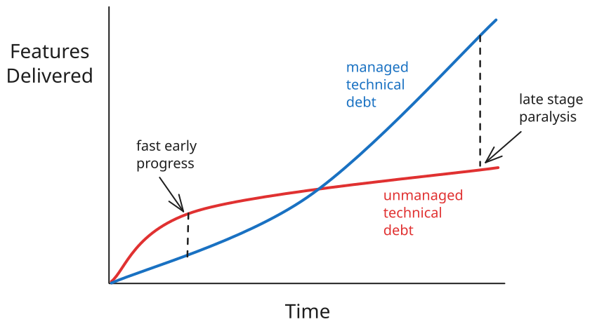

Example¶
This page shows how markdown will render.
H2 Header¶
This is h2 content.
H3 Header¶
This is h3 content.e
H4 Header¶
This is h4 content.
| Column 1 | Column 2 | Column 3 |
|---|---|---|
| Cell 1 | Cell 2 | Cell 3 |
| Cell 4 | Cell 5 | Cell 6 |
| Cell 7 | Cell 8 | Cell 9 |

How to do asides:
Optional custom title
Aside text here. Indented 4 spaces.
Add line feed between paragraphs
Available icons:
| Type | Aliases | Color | Icon |
|---|---|---|---|
note |
blue | pencil | |
abstract |
summary, tldr |
light blue | clipboard |
info |
todo |
teal | info circle |
tip |
hint, important |
green | fire |
success |
check, done |
green | checkmark |
question |
help, faq |
green | question mark |
warning |
caution, attention |
orange | triangle |
failure |
fail, missing |
red | X |
danger |
error |
red | lightning bolt |
bug |
red | bug | |
example |
purple | list | |
quote |
cite |
grey | quote marks |
Code
"linenums" will make it show line numbers.
"hl_lines" will highlight the specified lines if needed.